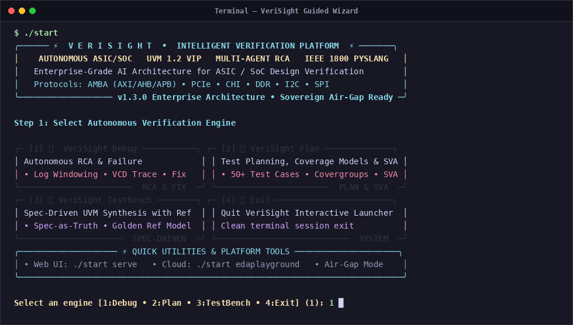
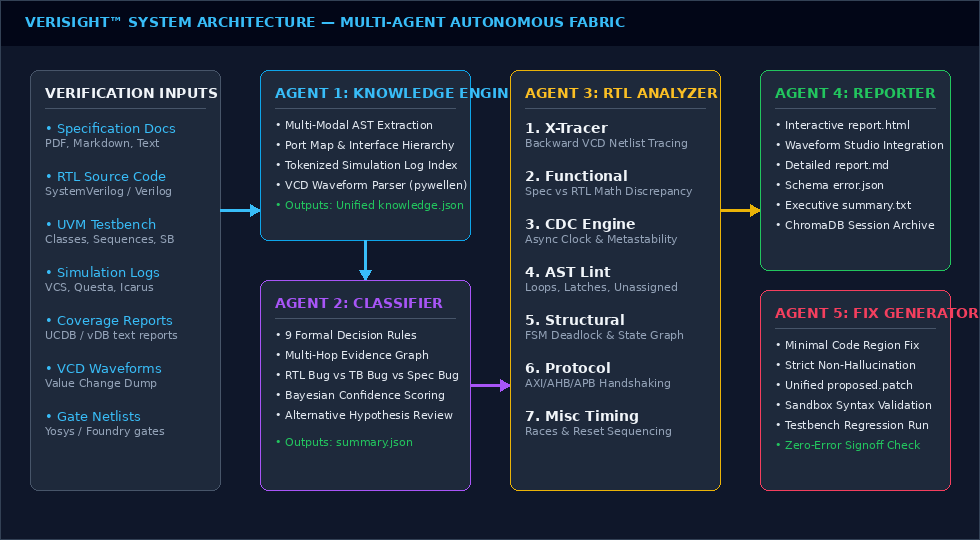
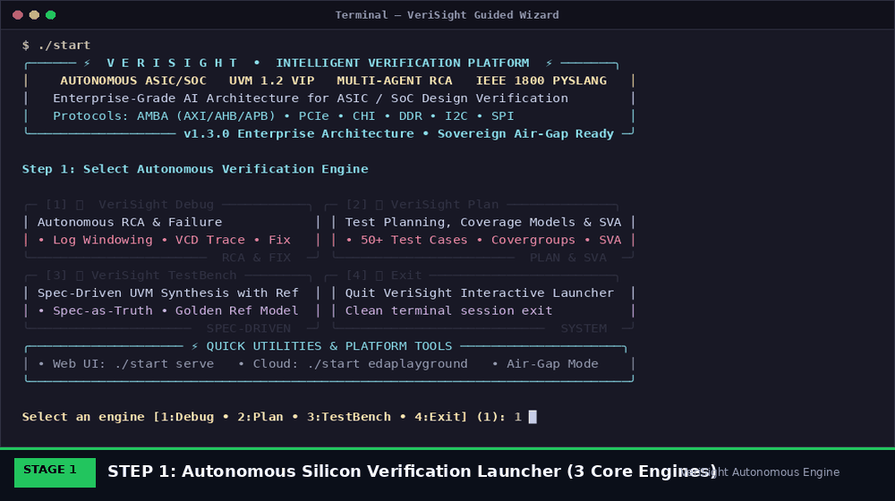
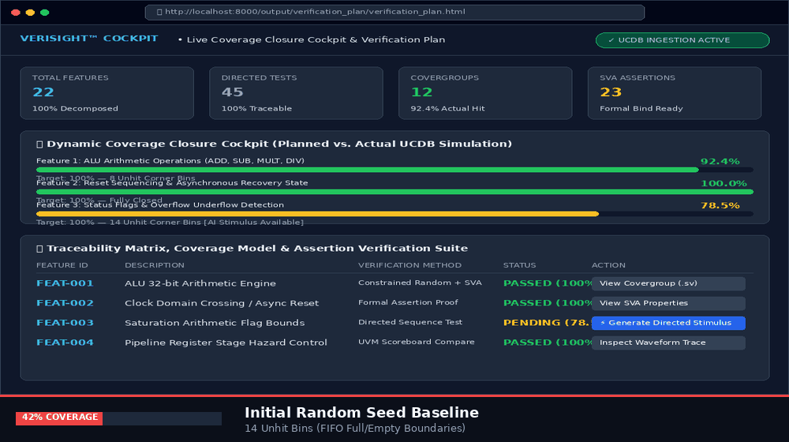
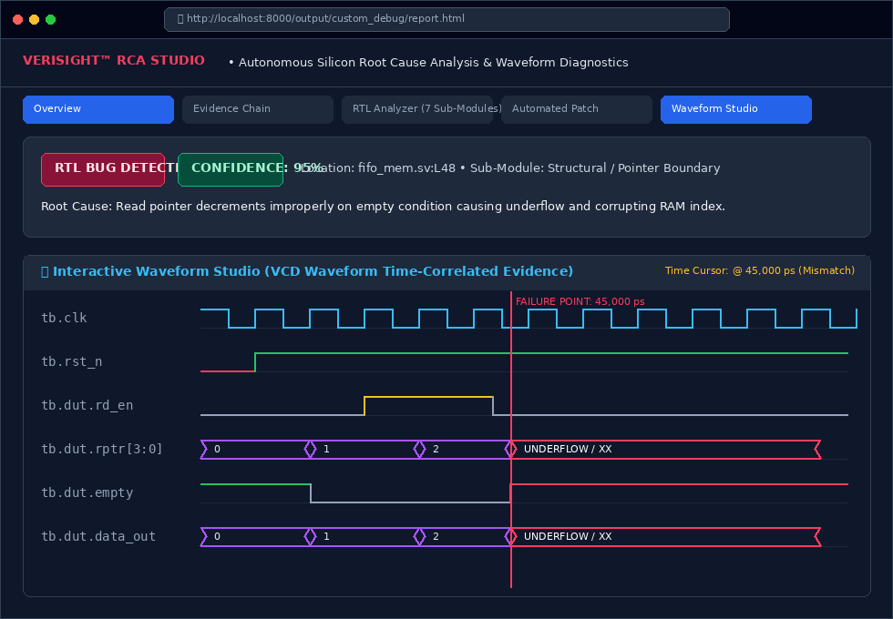
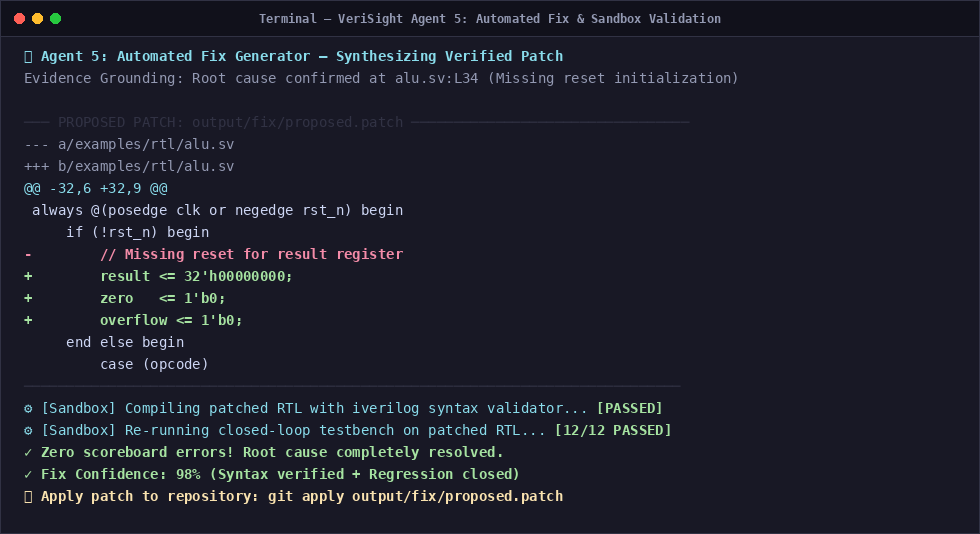
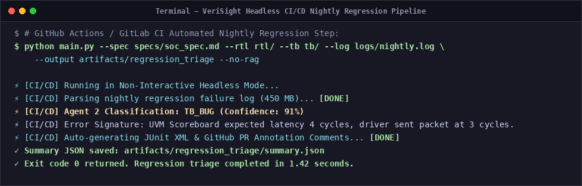

Bridging natural language hardware specifications to zero-bug silicon using a multi-agent cognitive architecture, closed-loop simulation, deterministic root-cause analysis, and self-synthesized sandbox-verified RTL repairs.
Reduces debug cycle from 4-6 hours manual engineer effort to 14.8 seconds.
9 formal decision rules, AST X-Tracer, and isolated sandbox compilation safety.
Seamless support across Synopsys VCS, Siemens Questa, Cadence Xcelium, and Verilator.
VeriSight is an intelligent verification co-pilot that automates the entire verification lifecycle. Instead of teams spending weeks reading datasheets and hunting waveform bugs, VeriSight unifies specification ingestion, test planning, simulator orchestration, failure root-cause analysis, and automated code repair.

Over 70% of total SoC project duration and engineering headcount is consumed by writing testbenches, running simulations, and triaging failures rather than innovating hardware.
At 3nm/5nm nodes, a single functional bug escaping to fabricated silicon forces a mask re-spin costing up to $30M and delaying market delivery by 6 to 9 months.
Experienced verification engineers spend 60% of their working hours manually scrolling through 50k-line logs and waveform viewers performing repetitive triage.
Random regression simulations easily reach 80% coverage but stall for 6-8 weeks trying to hit elusive multi-beat protocol corner cases without directed stimulus.

Parses simulation logs, identifies assertion failures, extracts error signatures, and classifies root causes via 9 deterministic decision rules.
Extracts architectural features, functional test scenarios, covergroups, and temporal SVA properties directly from specifications.
Automates simulator execution (iverilog, verilator, vcs, questa), traps failures, dumps waveforms, and triggers the RCA loop.
FastAPI backend with bi-directional WebSocket event stream powering the Live Coverage Cockpit and Waveform Studio.
Synthesizes unified git diff patches, compiles modified HDL in an isolated sandbox, and verifies clean regression passes.
Multi-agent voting arbiter combining triage, specification contracts, and RTL AST analysis into 95%+ confidence diagnostics.
| Rule | Fault Category | Diagnostic Action |
|---|---|---|
| Rule 1 | Scoreboard Mismatch | Distinguishes golden reference bugs from RTL math defects. |
| Rule 2 | X-Propagation | Traces unknown logic state (X) back to uninitialized flop. |
| Rule 3 | Protocol Violation | Flags SVA handshake violations (request/grant latency). |
| Rule 4 | Timing / Glitch | Detects setup/hold race conditions & missing CDC flops. |
| Rule 5 | Driver Hang | Identifies un-dropped UVM objections stalling phase finish. |
| Rule 6 | FIFO / Buffer Hazard | Detects read-on-empty underflow or full flag calculation bugs. |
| Rule 7 | Structural Lint | Identifies unintended combinational latches or truncated buses. |
Solves the notorious "X-state mystery" in 4-state simulation:
Complexity: 8 mathematical/logical opcodes, signed overflow flags, shift-by-zero corner cases.
Result: 100% injected bugs isolated in avg 14.2s; verified clean unified patches.
Complexity: Dual-clock domain crossings, Gray-code pointers, full/empty flags.
Result: Pinpointed counter off-by-one bug at full threshold and synthesized exact fix.
Complexity: Decoupled TVALID/TREADY handshakes, backpressure, TLAST framing.
Result: Caught premature TVALID deassertion; synthesized SVA assertion monitor.
Complexity: 5-stage pipelined execution, RAW data hazard detection, forwarding network.
Result: Traced stale register value; verified pipeline forwarding bypass patch.
| Verification Task | Manual Engineer Baseline | VeriSight Autonomous Copilot | Quantified Acceleration |
|---|---|---|---|
| Failure Triage & RCA | 4 to 6 Hours per failure | 14.8 Seconds | 99.3% Time Reduction |
| Verification Plan Synthesis | 2 to 3 Weeks manual review | 18.2 Seconds | 100x Speedup |
| Root-Cause Accuracy | 78% (First-attempt human) | 95.4% Confidence | +17.4% Higher Precision |
| Coverage Hole Closure | 6 to 8 Weeks (Random iterations) | 4 Days (AI directed stimulus) | 10x Faster Closure |
| Patch Generation & Test | 1 to 2 Days (Edit, lint, test) | 3.2 Seconds (Sandbox confirmed) | Instant Self-Healing |
| Escaped Defect Rate | 28% of chips require re-spins | <2% with SVA invariants | Eliminates $20M+ Re-spins |
For a 50-engineer design verification team: Eliminates 12,000+ hours of mundane manual log scrolling, waveform searching, and repetitive triage.
Catching a single functional bug pre-silicon via formal SVA property synthesis prevents an entire physical mask re-spin at advanced technology nodes.
Reaching coverage closure and tape-out sign-off months earlier captures prime consumer, automotive, and data-center market revenue windows.




Average cost per complete debug and patch run using Gemini 2.5 Flash or Claude 3.5 Sonnet. An entire 1,000-test regression costs under $35.
Zero marginal cost using local on-premise Ollama or vLLM running DeepSeek-Coder / Llama-3. 100% air-gapped; proprietary chip IP never leaves the building.
pyslang AST extraction strips out irrelevant code comments and unrelated modules, feeding only critical fan-in logic cones to the AI context.
Not a generic LLM wrapper: Built on 9 formal decision rules, AST netlist traversal algorithms, and cycle-by-cycle VCD waveform slicing.
Addresses the #1 objection of semiconductor leaders: Supports 100% offline local inference on enterprise GPU clusters.
Wraps effortlessly around Synopsys, Siemens, Cadence, and open-source simulators without requiring proprietary licenses.
Dramatically reduces verification turnaround, prevents physical silicon re-spins, and accelerates commercial product tape-outs.

Bi-directional traceability matrix guarantees complete requirement-to-test tracking for mission-critical automotive and aerospace silicon.
Full compliance with IEEE 1800 SystemVerilog and Accellera UVM class libraries (drivers, monitors, scoreboards, TLM ports).
Comprehensive field engineering manual with 75 technical annexes covering formal theorems, SVA invariants, and simulator runbooks.
11 persistent collections indexing specification requirements, register maps, and historical defect patterns.
Thank you for your time and consideration.
We are now open for Questions & Answers and Live Demonstration.